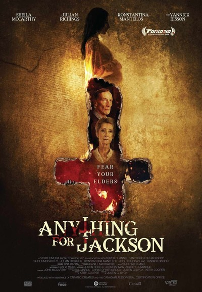

Rating: 🎃🎃🎃🎃
Anything for Jackson is a 2019 Shudder Exclusive film that premiered on Shudder on December 3rd. This film, similar to The Lodge doesn't have many locations, but is so beautifully shot and atmospheric, that you won't miss it. The movie brings together feelings of dread, suspense and a good old fashioned ghost story. If this sounds like something you're interested in, then I would stop what you're doing and hop over to Shudder to enjoy Anything for Jackson, which made my top 3 horror films of the year.
The film starts off like a typical family film you may see on Freeform. The scene starts with Audrey Walsh, played by Sheila McCarthy and Henry Walsh, played by Julian Richings sititng in their kitchen and discussing the length of Henry's pants. Henry then tells Audrey that "she's early" and heads out of the front door. The camera angle doesn't move, but as Henry comes back into the shot, he's dragging a very pregnant woman, who we find out is Shannon Becker, played by Konstantina Manelos. We are now off to the races in this supernatural thriller.
We find out that Audrey and Henry are a grieving couple who are mourning the loss of their late grandson, Jackson due to a tragic car accident. The couple, realizing they can't cope with their recent loss, turn to Satanism to try to find a way to bring Jackson back. Henry and Audrey come across a Satanic book which has a spell that would allow them to take the spirit of Jackson and put it into a new baby. Henry, a doctor, starts vetting his patients to find the perfect candidate for their experiment. That's when Shannon Becker enters and their....opposite of prayers...are answered. Shannon is a soon to be single mom who doesn't have any family in the state and doesn't speak with the father of her soon to be child. To make things even better for the grieving couple, Henry finds out that Shannon walks the same route, which includes their street, every morning.
Before she knows what happened, Shannon finds herself chained to a bed, in a spare bedroom in the Walsh's residence. They explain to her that they lost their grandson Jackson in a tragic car accident, but thanks to a Satanic group they found, they will be able to bring him back through her baby. As the film goes on and the couple proceeds with the spell, Shannon begins to see a young boy playing in the room. When he turns around, she sees the fatal wound in the back of his head, and realizes he's not real. This news excites the couple as they believe they are one step to getting Jackson back. Unfortunately, as the couple will soon find out, when they opened the doors to this world, Jackson wasn't the only one to come through. As the other spirits begin to reveal themselves, the whole story of the Walsh's dark past begins to reveal itself to Shannon and the viewers alike.
In what I would call an original ghost story that packs quite the punch in 97 minutes, "Anything for Jackson" is a breath of fresh air in a year filled with letdowns and movies pushed back indefintely. If you haven't already, I invite you to turn down your lights, head over to Shudder and see just how far the Walsh's will go in Anything for Jackson.